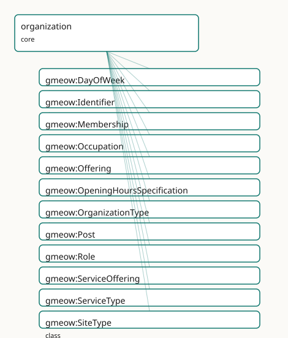

GMEOW Organization Module
- IRI: https://blackcatinformatics.ca/gmeow/slices/organization
- Tier: core
Group: core
What This Slice Covers
This slice owns 67 terms and contributes 128 mapping or projection rows. Use it when its terms match the native fact you want to preserve; use the linkage tables to see how those facts leave GMEOW for consumer vocabularies.
Dependencies
Consumers
- Employers, publishers, registrars across slices; posts and roles; the W3C-ORG projection.
Local Map

Examples
Post And Membership
- Source:
slices/core/organization/examples/post-and-membership.ttl - GMEOW terms:
gmeow:Membership,gmeow:Organization,gmeow:Person,gmeow:Post,gmeow:fillsPost,gmeow:membershipMember,gmeow:membershipOrganization,gmeow:name,gmeow:organizationType,gmeow:organizationTypeCompany
# SPDX-FileCopyrightText: 2026 Blackcat Informatics® Inc. <paudley@blackcatinformatics.ca>
# SPDX-License-Identifier: CC-BY-4.0
#
# Worked example: the seat is not the sitter . GMEOW de-conflates the two
# things surface vocabularies collapse into "CFO": the gmeow:Post (the seat, a
# RoleMixin that exists whether or not anyone fills it) and the gmeow:Membership
# (a person's tenure occupying it). The membership gmeow:fillsPost the post, so a
# vacancy (a Post with no Membership) and a succession (two Memberships filling
# one Post) are both expressible. organizationType is an open VALUE (a company is
# a company by value, not by subclass), and subOrganizationOf decomposes the org
# structurally — distinct from "is a member of".
@prefix gmeow: <https://blackcatinformatics.ca/gmeow/> .
@prefix ex: <https://blackcatinformatics.ca/gmeow/examples/organization/> .
@prefix rdfs: <http://www.w3.org/2000/01/rdf-schema#> .
# --- The company and a structural sub-organization.
ex:acme a gmeow:Organization ;
gmeow:name "Acme Robotics Inc."@en ;
gmeow:organizationType gmeow:organizationTypeCompany .
ex:engineering a gmeow:Organization ;
gmeow:name "Engineering Division"@en ;
gmeow:organizationType gmeow:organizationTypeCompany ;
gmeow:subOrganizationOf ex:acme .
# --- The CFO Post: the seat, defined independently of who holds it.
ex:cfoPost a gmeow:Post ;
rdfs:label "Chief Financial Officer"@en ;
gmeow:postIn ex:acme .
# --- The person, and the Membership that fills the seat — the sitter, distinct
# from the chair. A later tenure would be ANOTHER Membership filling the same
# Post; a vacancy would leave the Post with no Membership at all.
ex:dana a gmeow:Person ;
gmeow:name "Dana Reyes"@en .
ex:danaTenure a gmeow:Membership ;
gmeow:membershipMember ex:dana ;
gmeow:membershipOrganization ex:acme ;
gmeow:fillsPost ex:cfoPost .
Terms
Classes
| Term | Label | Definition |
|---|---|---|
gmeow:DayOfWeek |
Day Of Week | A day of the week — a VALUE vocabulary (the seven ISO-8601 days as individuals); projects to schema:dayOfWeek. |
gmeow:Identifier |
Identifier | A reified external-identifier record bundling a scheme-local value with its scheme, and optionally the authority URL that resolves it and a human-readable name... |
gmeow:Membership |
Membership | The reified relationship by which an agent is a member of an organization, optionally playing a role over a period of time. |
gmeow:Occupation |
Occupation | A kind of work or profession, such as those classified by ESCO, SOC, or O*NET. Classifications are carried as open code values (gmeow:occupationClassification)... |
gmeow:Offering |
Offering | A commercial offer to provide some item — a product, a service, an engagement — by an agent. Projects to schema:Offer. The item is named by gmeow:itemOffered;... |
gmeow:OpeningHoursSpecification |
Opening Hours Specification | A reified opening-hours window — a day (or set of days), an opening time and a closing time. Projects to schema:OpeningHoursSpecification. Reification keeps ea... |
gmeow:OrganizationType |
Organization Type | The kind of an organization — a VALUE, never an Organization subclass. The set is open; a kind not among the seed individuals is a FRESH gmeow:OrganizationType... |
gmeow:Post |
Post | A seat or position that exists independently of who currently holds it — the CFO chair is not the person now in it. A Post bundles a gmeow:Role within a specif... |
gmeow:Role |
Role | A function or position an agent plays in some context, such as a job title or organizational role. |
gmeow:ServiceOffering |
Service Offering | A service an agent provides — consulting, support, hosting. Distinct from gmeow:Service (the documents-slice creative-work sense); this is the commercia... |
gmeow:ServiceType |
Service Type | The kind of a service offering — a VALUE vocabulary (individuals, never subclasses); open set (consulting, hosting, support, …). |
gmeow:SiteType |
Site Type | The purpose of an organization's site — headquarters, branch, registered office, etc. A value, not a subclass. |
Properties
| Term | Label | Definition |
|---|---|---|
gmeow:acceptsCurrency |
accepts currency | Relates an organization to a currency it accepts for payment — a currency reference frame (a member of gmeow:frameRealmCurrency, e.g. gmeow:referenceFrameUSD),... |
gmeow:acceptsPaymentMethod |
accepts payment method | Relates an organization to a payment method it accepts — reusing the finance-slice gmeow:PaymentMethod individuals (cash, credit card, bank transfer, cryptocur... |
gmeow:alumniOf |
alumnus of | An organization — typically educational — a person is an alumnus/alumna of (schema:alumniOf; the inverse projects to schema:alumni). A past-affiliation relatio... |
gmeow:areaServed |
area served | The geographic area an offering or service serves — a gmeow:Location. Non-functional. Projects to schema:areaServed. |
gmeow:closesAt |
closes at | The closing time of an opening-hours window. Projects to schema:closes. |
gmeow:fillsPost |
fills post | Relates a membership to the post (seat) the member occupies. The sitter is the member via gmeow:membershipMember; the seat is the Post. Non-functional: a joint... |
gmeow:foundedBy |
founded by | Relates an organization to an agent who founded it. Non-functional: several co-founders coexist, and competing standpoint-indexed founding claims coexist (P9).... |
gmeow:founderOf |
founder of | Relates an agent to an organization it founded. Inverse of gmeow:foundedBy. |
gmeow:hasIdentifier |
has identifier | Relates an entity to a reified external-identifier record (an ORCID, geni id, nip05, LEI, industry code, …). Domain is gmeow:Entity: persons, organizations, wo... |
gmeow:hasMember |
has member | Relates an organization to one of its member agents; the inverse of memberOf. |
gmeow:hasOpeningHours |
has opening hours | Relates an offering (or the org/place behind it) to an opening-hours window. Non-functional: several windows coexist. |
gmeow:hasRole |
has role | Relates a membership to the role the member plays. |
gmeow:hasSite |
has site | Relates an organization to a location it occupies or operates from — a headquarters, branch, or registered office. Reuses the places module's gmeow:Location. N... |
gmeow:identifierScheme |
identifier scheme | The scheme of an identifier — e.g. 'lei', 'ror', 'naics', 'isicV4', 'companyRegistration', 'wikidata'. Declared on the Identifier node, not the Organization, t... |
gmeow:identifierUrl |
identifier url | The authority URL that resolves an identifier record — e.g. the geni profile page, the ORCID record URL, the ROR landing page. The resolvable counterpart of th... |
gmeow:identifierValue |
identifier value | The literal value of an identifier — e.g. '529900T8BM49AURSDO55' or '541511'. |
gmeow:industryClassification |
industry classification | Relates an organization to an industry-classification identifier — a NAICS, ISIC, or schema.org industry code. The scheme is declared via gmeow:identifierSchem... |
gmeow:itemOffered |
item offered | The item an offering provides — a gmeow:ServiceOffering, a product, or any entity. Projects to schema:itemOffered. |
gmeow:jurisdiction |
jurisdiction | The legal or regulatory jurisdiction of a specific identifier (e.g., company registration jurisdiction) — a country, state, province, or other gmeow:Location.... |
gmeow:legalIdentifier |
legal identifier | Relates an organization to a legal identifier — a LEI, ROR ID, company-registration number, or other scheme-specific code. The scheme is declared via gmeow:ide... |
gmeow:makesOffer |
makes offer | Relates an agent to an offering it makes. Non-functional. Projects to schema:makesOffer. |
gmeow:memberOf |
member of | Relates an agent to an organization it belongs to. |
gmeow:membershipMember |
membership member | The agent whose membership a gmeow:Membership reifies. Functional — a membership concerns one member (the relator's member role); the flat gmeow:memberOf is th... |
gmeow:membershipOrganization |
membership organization | The organization a gmeow:Membership is in. Functional — a membership concerns one organization (which may be a department, i.e. a gmeow:subOrganizationOf a lar... |
gmeow:offeringProvider |
offering provider | The agent that provides an offering or service. Projects to schema:provider. |
gmeow:openingDay |
opening day | A day this opening-hours window applies to — a gmeow:DayOfWeek value. Non-functional (a window may span several days). Projects to schema:dayOfWeek. |
gmeow:opensAt |
opens at | The opening time of an opening-hours window. Projects to schema:opens. |
gmeow:organizationPurpose |
organization purpose | A free-text statement of an organization's purpose, mission, or objective. |
gmeow:organizationType |
organization type | The kind(s) of an organization (one or more gmeow:OrganizationType individuals). Non-functional: a single organization may be both a company and an educational... |
gmeow:ownedBy |
owned by | Relates something to an agent that owns it. Inverse of gmeow:ownerOf. |
gmeow:ownerOf |
owner of | Relates an agent to something it owns — an organization, an asset, a work. Non-functional and standpoint-indexable (contested ownership coexists, P9). The flat... |
gmeow:postIn |
post in | The organization a post belongs to. Functional — a post concerns exactly one organization. |
gmeow:predecessorOrganization |
predecessor organization | An organization that ceases or transforms in a multi-organization change event — a merger, split, spin-off, acquisition, or rename. Non-functional: a merger ha... |
gmeow:priceRange |
price range | A coarse, human-readable indication of a business's price level — e.g. '$$', '$$$', or '$10–$50'. A presentational summary, deliberately NOT a structured price... |
gmeow:serviceType |
service type | The kind(s) of a service offering — open gmeow:ServiceType values. Non-functional. Projects to schema:serviceType. |
gmeow:siteType |
site type | The purpose of a location when used as an organizational site — headquarters, branch, registered office. Non-functional: a single location may serve multiple p... |
gmeow:slogan |
slogan | A promotional tagline or motto an agent presents itself by — the short marketing phrase of an organization (or person/brand). A flat, displayable literal (lang... |
gmeow:subOrganizationOf |
sub-organization of | Relates an organization to a larger organization it is part of — a department or division within a company, a team within a department. Transitive (a team is p... |
gmeow:successorOrganization |
successor organization | An organization that begins or results from a multi-organization change event. Non-functional: a split has several successors, and competing standpoint-indexed... |
Individuals
| Term | Label | Definition |
|---|---|---|
gmeow:dayFriday |
Friday | Friday. |
gmeow:dayMonday |
Monday | Monday. |
gmeow:daySaturday |
Saturday | Saturday. |
gmeow:daySunday |
Sunday | Sunday. |
gmeow:dayThursday |
Thursday | Thursday. |
gmeow:dayTuesday |
Tuesday | Tuesday. |
gmeow:dayWednesday |
Wednesday | Wednesday. |
gmeow:organizationTypeAssociation |
association | An association, society, or union of members. |
gmeow:organizationTypeCollaboration |
collaboration | A cross-organization collaboration — a consortium, joint venture, standards body, or temporary multi-party arrangement. |
gmeow:organizationTypeCompany |
company | A for-profit business entity. |
gmeow:organizationTypeEducationalInstitution |
educational institution | A school, university, college, or other educational body. |
gmeow:organizationTypeGovernmentBody |
government body | A governmental or public-sector organization. |
gmeow:organizationTypeNonprofit |
nonprofit | A not-for-profit organization. |
gmeow:siteTypeBranch |
branch | A branch office or subsidiary location of an organization. |
gmeow:siteTypeHeadquarters |
headquarters | The principal office or headquarters of an organization. |
gmeow:siteTypeRegistered |
registered | The registered or legal office of an organization. |
Linkages
- Rows: 128
- Projection profiles:
org,resume,schema-org,vcard - External vocabularies:
esco,org,rdf,schema,vcard,wd
| Source | Kind | Profile | Predicate/Relation | Target | Evidence |
|---|---|---|---|---|---|
gmeow:Identifier |
equivalence | - |
skos:closeMatch | schema:PropertyValue | gmeow-classes.sssom.tsv; gmeow:eqClasses055; confidence 0.85 |
gmeow:Membership |
equivalence | - |
owl:equivalentClass | org:Membership | gmeow-classes.sssom.tsv; gmeow:eqClasses012; confidence 1 |
gmeow:Occupation |
equivalence | - |
owl:equivalentClass | esco:Occupation | gmeow-classes.sssom.tsv; gmeow:eqClasses053; confidence 0.9 |
gmeow:Occupation |
equivalence | - |
owl:equivalentClass | schema:Occupation | gmeow-classes.sssom.tsv; gmeow:eqClasses043; confidence 1 |
gmeow:Occupation |
equivalence | - |
skos:closeMatch | wd:Q12737077 | gmeow-wikidata.sssom.tsv; gmeow:eqWikidata051; confidence 0.85 |
gmeow:Offering |
equivalence | - |
skos:closeMatch | schema:Offer | gmeow-classes.sssom.tsv; gmeow:eqClasses057; confidence 0.85 |
gmeow:OpeningHoursSpecification |
equivalence | - |
skos:closeMatch | schema:OpeningHoursSpecification | gmeow-classes.sssom.tsv; gmeow:eqClasses059; confidence 0.9 |
gmeow:Post |
equivalence | - |
owl:equivalentClass | org:Post | gmeow-classes.sssom.tsv; gmeow:eqClasses048; confidence 1 |
gmeow:Role |
equivalence | - |
owl:equivalentClass | org:Role | gmeow-classes.sssom.tsv; gmeow:eqClasses010; confidence 1 |
gmeow:Role |
equivalence | - |
rdfs:subClassOf | schema:OrganizationRole | gmeow-classes.sssom.tsv; gmeow:eqClasses011; confidence 0.9 |
gmeow:ServiceOffering |
equivalence | - |
skos:closeMatch | schema:Service | gmeow-classes.sssom.tsv; gmeow:eqClasses058; confidence 0.85 |
gmeow:areaServed |
equivalence | - |
skos:closeMatch | schema:areaServed | gmeow-properties.sssom.tsv; gmeow:eqProperties087; confidence 0.9 |
gmeow:closesAt |
equivalence | - |
skos:closeMatch | schema:closes | gmeow-properties.sssom.tsv; gmeow:eqProperties091; confidence 0.9 |
gmeow:dayFriday |
equivalence | - |
skos:exactMatch | schema:Friday | gmeow-classes.sssom.tsv; gmeow:eqClasses064; confidence 1 |
gmeow:dayMonday |
equivalence | - |
skos:exactMatch | schema:Monday | gmeow-classes.sssom.tsv; gmeow:eqClasses060; confidence 1 |
gmeow:daySaturday |
equivalence | - |
skos:exactMatch | schema:Saturday | gmeow-classes.sssom.tsv; gmeow:eqClasses065; confidence 1 |
gmeow:daySunday |
equivalence | - |
skos:exactMatch | schema:Sunday | gmeow-classes.sssom.tsv; gmeow:eqClasses066; confidence 1 |
gmeow:dayThursday |
equivalence | - |
skos:exactMatch | schema:Thursday | gmeow-classes.sssom.tsv; gmeow:eqClasses063; confidence 1 |
gmeow:dayTuesday |
equivalence | - |
skos:exactMatch | schema:Tuesday | gmeow-classes.sssom.tsv; gmeow:eqClasses061; confidence 1 |
gmeow:dayWednesday |
equivalence | - |
skos:exactMatch | schema:Wednesday | gmeow-classes.sssom.tsv; gmeow:eqClasses062; confidence 1 |
gmeow:fillsPost |
equivalence | - |
skos:closeMatch | org:holds | gmeow-properties.sssom.tsv; gmeow:eqProperties062; confidence 0.8 |
gmeow:hasMember |
equivalence | - |
skos:closeMatch | org:member | gmeow-properties.sssom.tsv; gmeow:eqProperties019; confidence 0.8 |
gmeow:hasOpeningHours |
equivalence | - |
skos:closeMatch | schema:openingHoursSpecification | gmeow-properties.sssom.tsv; gmeow:eqProperties088; confidence 0.9 |
gmeow:hasRole |
equivalence | - |
skos:exactMatch | org:role | gmeow-properties.sssom.tsv; gmeow:eqProperties076; confidence 0.85 |
| ... | ... | ... | ... | ... | 104 more rows |
Guide
Organization — modelling & interoperability guide
GMEOW's organization slice is a W3C Organization Ontology (ORG) superset that
reuses the universal event, lifecycle, temporal, place, and standpoint machinery
rather than minting parallel mechanisms (Principle 4). It de-conflates concepts
that surface vocabularies routinely collapse:
| Collapsed in surface vocab | GMEOW de-conflation |
|---|---|
| "CFO" = the person and the title | gmeow:Post (seat) ⟂ gmeow:Membership (holder) |
| "department" = org type and sub-organization | gmeow:subOrganizationOf (structural) + organizationType (value) |
| "founding date" = flat date on org | hasCreationEvent → universal Event with time, place, roles, standpoint |
| "merged company" = single successor truth | Coexisting accordingTo-annotated successorOrganization claims |
Post — the seat independent of the holder
gmeow:Post is a gufo:RoleMixin that represents a seat or position (the
CFO chair) independently of who currently holds it. A Post is linked to exactly
one Organization via the functional property gmeow:postIn. A gmeow:Membership
may gmeow:fillsPost the Post, making the distinction between the seat and the
sitter explicit.
This enables:
- Vacant posts: a
Postexists with noMembershipfilling it. - Succession in a post: two Memberships (successive tenures) fill the same
Post. - Org mismatch detection: SHACL warns when a
Membership'smembershipOrganizationdiffers from thePost'spostInorganization.
Organization type — an open value vocabulary
gmeow:OrganizationType is a gufo:QualityValue vocabulary (individuals, never
subclasses — Principle 9). The seed values are:
company— for-profit businessnonprofit— not-for-profit organizationgovernmentBody— public-sector bodyeducationalInstitution— school, university, collegeassociation— society, union, or membership bodycollaboration— consortium, joint venture, standards body
These mirror ORG's FormalOrganization / OrganizationalUnit /
OrganizationalCollaboration distinctions as co-equal values, not disjoint
subclasses. A single organization may carry several types (a university that is
also a nonprofit), and competing standpoint-indexed type claims coexist without
privileging one (Principle 9).
Site — organizational location
gmeow:hasSite links an Organization to a gmeow:Location (from the places
module), with gmeow:siteType marking the purpose:
headquarters— principal officebranch— subsidiary locationregistered— legal / registered office
Reusing the places module means a site is a first-class Place with coordinates,
geometry, containment, and gazetteer coreference — not a flattened address string.
Multi-organization change events
Creation and destruction of a single organization reuse the universal lifecycle
hooks (hasCreationEvent / hasDestructionEvent, with eventTypeCreation /
eventTypeDestruction). Do not duplicate them.
Transitions that relate two or more organizations use the event module's
universal Event with new EventType values:
eventTypeMerger— two+ orgs combineeventTypeSplit— one org divides into two+eventTypeSpinOff— a part breaks awayeventTypeAcquisition— one org acquires anothereventTypeRename— same entity, new name (reuses the names module)
gmeow:predecessorOrganization and gmeow:successorOrganization link the orgs
an event relates. A rename additionally uses the names module plus a temporal
tenure (Facebook → Meta).
Contested succession
Post-merger or post-coup, rival successor claims coexist as standpoint-indexed
statements (Principle 9). Two accordingTo-annotated successorOrganization
claims on the same event are both retained — there is no preferredSuccessor.
Withdrawn claims stay with displayable false, never deletion (Principle 10).
Legal identity
gmeow:legalIdentifier and gmeow:industryClassification are reified via the
gmeow:Identifier class to avoid conflation when an organization carries multiple
codes (e.g. LEI + ROR + NAICS). Each Identifier node bundles gmeow:identifierValue
(the string) and gmeow:identifierScheme (lei, ror, naics, isicV4, etc.).
Reification ensures SPARQL projections pair the correct value with its scheme.
Optional gmeow:jurisdiction links to a gmeow:Location.
gmeow:Identifier as the universal external-identifier record
gmeow:Identifier is not organization-only — it is the universal reified
external-identifier record. gmeow:hasIdentifier has domain gmeow:Entity,
so a person carries an ORCID, a geni profile id, and a Nostr nip05 the same way
an organization carries a LEI. It is the structured sibling of
gmeow:authorityLink (coreference): a flat authorityLink points at an external
record by IRI, while an Identifier decomposes the scheme, the scheme-local value,
and the resolvable gmeow:identifierUrl — exactly the parts schema:PropertyValue
(propertyID/value/url) and DataCite relatedIdentifier carry. The human
display caption ("Geni profile", "ORCID iD") is the record's own rdfs:label,
not a bespoke *Name property: a Name in GMEOW is a reified gmeow:Appellation
borne by an entity (the names slice), whereas this is a plain display label, so the
projection reads rdfs:label → schema:name. gmeow:legalIdentifier /
gmeow:industryClassification / gmeow:jurisdiction specialise it for the
organization case; the generic record serves every entity.
Purpose
gmeow:organizationPurpose is free text. Hierarchical resolution and cross-scheme
mapping are solver-side computations (Principle 12); the logical core stays
OWL 2 DL.
Alignment by reference
The mapping layer extends the existing shared alignment files:
| GMEOW term | W3C ORG | schema.org |
|---|---|---|
Post |
≡ org:Post |
lossy → OrganizationRole |
postIn |
≈ org:postIn |
— |
fillsPost |
≈ org:holds |
— |
hasSite |
≡ org:hasSite |
→ schema:location |
organizationType values |
≈ org:FormalOrganization etc. |
→ schema:Corporation etc. |
predecessorOrganization |
≈ org:originalOrganization |
— |
successorOrganization |
≈ org:resultingOrganization |
— |
organizationPurpose |
≡ org:purpose |
— |
industryClassification |
≈ org:classification |
→ schema:naics / schema:isicV4 |
legalIdentifier (lei) |
— | → schema:leiCode |
hasIdentifier (generic) |
— | scheme-dependent |
All alignments are by reference (SSSOM / EDOAL / SPARQL projection) — never axiom copying (Principle 5).
Founding, ownership, and offerings
gmeow:foundedBy · gmeow:ownerOf
Flat founding and ownership edges (P4 reify-on-demand): gmeow:foundedBy /
gmeow:founderOf and gmeow:ownerOf / gmeow:ownedBy. Non-functional and
standpoint-indexable (contested founding/ownership coexist, P9); promote to an Event /
ownership relator when date, share, or jurisdiction matter. Project to schema:founder
/ schema:owns.
gmeow:Offering · gmeow:ServiceOffering · gmeow:OpeningHoursSpecification
The minimal commercial-offerings surface (P15 consumer: the bii profile). An
agent gmeow:makesOffer an gmeow:Offering of some gmeow:itemOffered (a
gmeow:ServiceOffering or any entity), provided by gmeow:offeringProvider. A service
carries an open gmeow:serviceType and a gmeow:areaServed; opening hours are a
reified gmeow:OpeningHoursSpecification (gmeow:openingDay from the open
gmeow:DayOfWeek vocab, gmeow:opensAt / gmeow:closesAt). gmeow:ServiceOffering is
distinct from the documents-slice gmeow:Service (a creative work). Projects to
schema:Offer / Service / makesOffer / itemOffered / provider / serviceType /
areaServed / OpeningHoursSpecification / dayOfWeek / opens / closes.